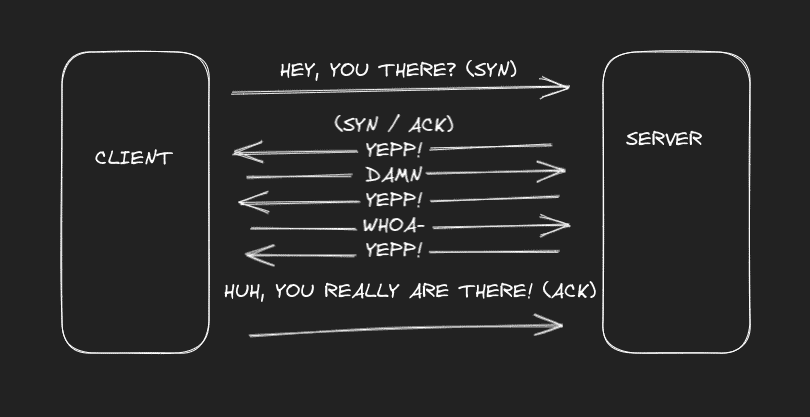
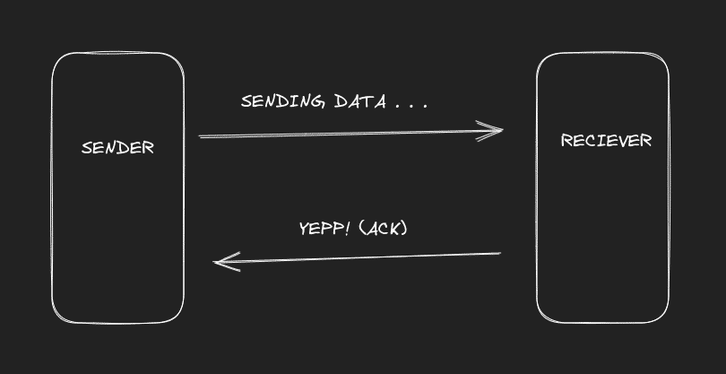

OSI Model for Noobs
Let's say you want to talk to a friend, over the internet. You type a message and hit send. The application quickly pushes your message to the presentation layer, where it takes care of the text format (ASCII or UTF-8), encryption (you don't want others to know about your conversation, right?) and compression (smaller it is, cheaper). The current layer hands the chunk over to the session layer, which helped you to start the conversation (and hide your location, if you're using a VPN) in the first place. It tags the chunk with the gate (or port) it needs to go through because the firewall is there to block things (at your and your friend's machine) to keep you guys safe.
You've reached the bridge. The connection has been established already, it can be TCP (with three way handshake) or UDP. Three way handshake happens for TCP because TCP is a connection oriented protocol, which makes sure that the receiver receives the message. It goes like this:

But when data is sent, it is like:

I've been using the word protocol lately, in simple terms, protocol means, a set of rules. Also, I've been using chunk or chunks as a general term for the packet, frame, segment, etc., because that's how I learned, and too many words confused me back then. (and hey, this is oversimplified)
The network layer receives the chunk from above and tags the received chunk with your private IP address (Imagine IP address as the location in the world of the internet), and the public IP address of your friend, and passes it to the data link layer. The data link Layer attaches your MAC address (the name of your computer's hardware on the internet) and destination MAC address and passes it to the physical layer, which can be ethernet cables or fiber cables, etc. (it goes as far as ending up in big chonky cables running under the sea across the continents!)
Hence the mighty chunks of data are ready to sail in the vast ocean. Some make it to the destination, some die when their TTL (time to live) expires.
The chunk hops through your switch, your router, then router to router till it finds the right router it needs to pass through. This is a complex graphs algorithms zone now. It is used to find the shortest path, make travel more efficient, make sure the chunks of data you send don't get clogged up or get stuck in a loop somehow, etc. Finally, the packet reaches the router with that public IP.
After it reaches your friend's computer, it goes unpacking all the things you tagged the chunky message with. It is the opposite. If it is TCP, it'll send an acknowledgment message that it got it. The port number that is pasted on the chunk will allow it to go through the right gate, the encryption gets decrypted in the presentation layer, it makes sense out of the text encoding and all the broken packets are reorganized to make it "presentable" to the application. Then the application puts the text you sent your friend in front of his screen.
Sender ->
Application: Message is to be sent. Send!
Presentation: Encryption.
Session: Meant to go through gate Y. Tell him I sent you.
Transport: Handshake done already, hope it reaches there...
Network: Location in the map of the internet. (IP)
Data Link: Data, a name stored somewhere, MAC addresses!
Physical: The cables.
-> Reciever
Physical: The cables.
Data Link: Finds its name on the packet.
Network: Yepp! it's my IP too!
Transport: Tells the sender that it got the packet.
Session: The customs department.
Presentation: Data is all scrambled, need to make it readable for humans.
Application: Got a message for you!